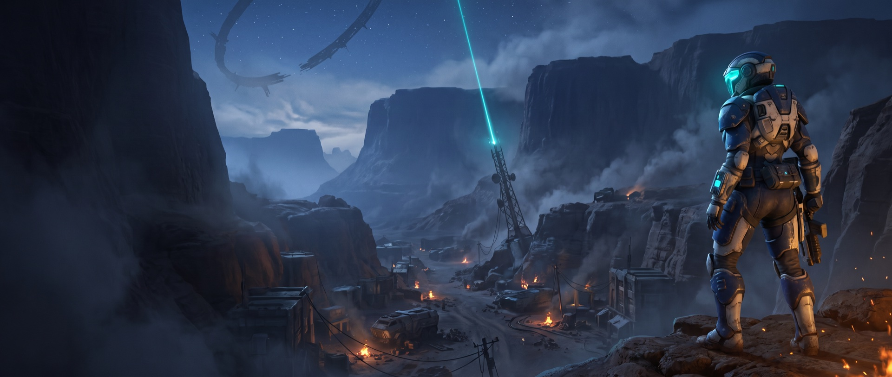
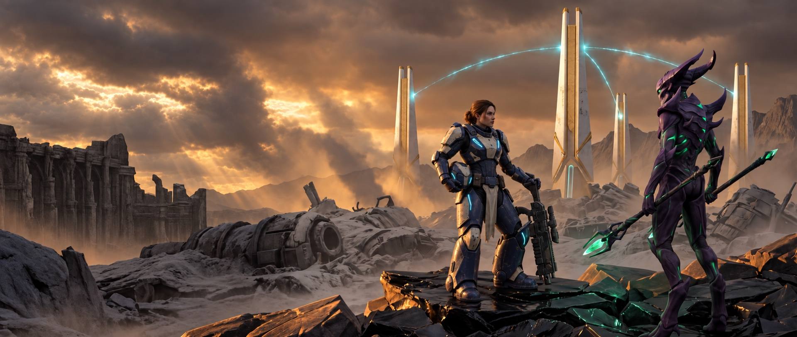
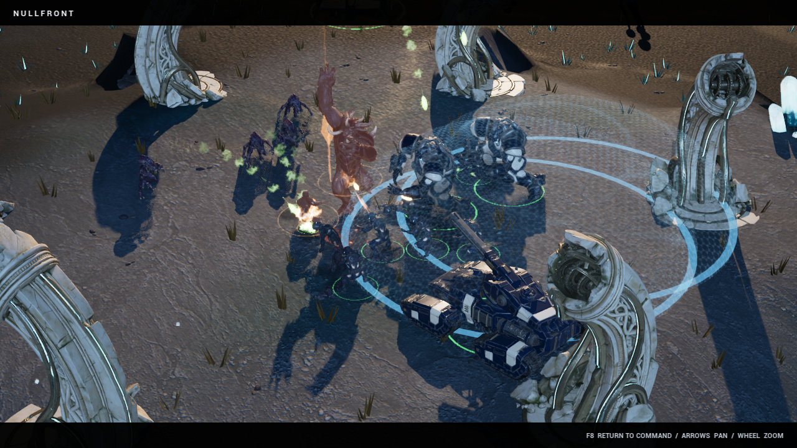
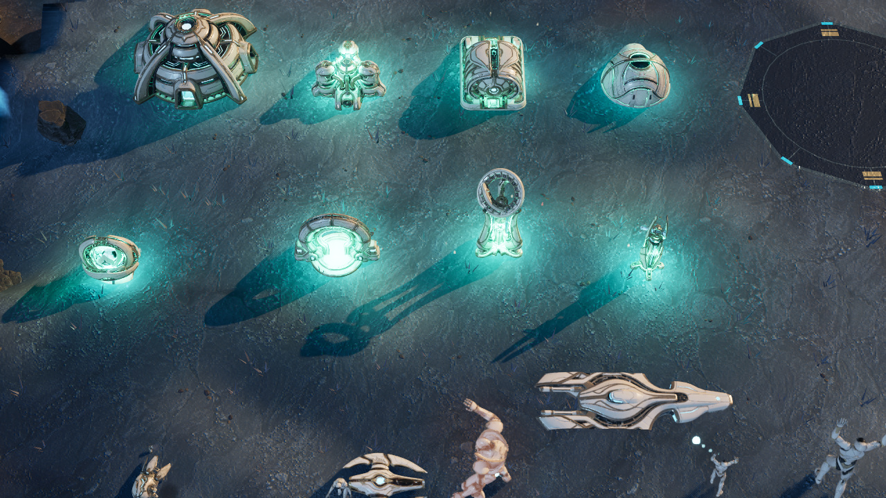

Armies
with presence.
Infantry brace and recoil. Aircraft bank into turns. Workers move their tools, and heavy armor announces each charged strike. Read the threat, reposition, and answer with your own attack.
A LIVING FRONTIER · THE 0.6 ART UPDATE
FRONTIER WARS
THE FRONTIER IS YOURS.
Command an army with a world of detail.
Three factions. A four-chapter campaign. Your frontier.
APPLE SILICON • macOS 14+ • FREE PUBLIC PREVIEW
A LIVING FRONTIER · NEW IN 0.6
From the worker at your refinery to the fortress on your horizon.
Detailed models now reach every type on the battlefield.
Infantry brace and recoil. Aircraft bank into turns. Workers move their tools, and heavy armor announces each charged strike. Read the threat, reposition, and answer with your own attack.
All 23 structures carry their faction’s identity: the Concord’s armored industry, the Bloom’s living architecture, and the Lumen’s luminous machinery. Read the battlefield by its silhouettes.
Fractured basalt, mineral vents, and luminous crystals give the frontier its texture. Localized flashes light the armor and smoke. Wreckage settles after the blast while the score rises with the fight.
THE STORY CAMPAIGN · FOUR CHAPTERS
A dead relay speaks. Commander Ada Voss answers.

A TRANSMISSION FROM THE OTHER SIDE
Lead Voss through the ruins of Ashfall, hold the ice bridge at Frostglass, and discover what is speaking through the enemy. Keep your commander alive. Bring your army home.
Begin the campaign CAMPAIGN KEY ART · FEATURED IN GAMECINEMATIC STORY TRAILER · 12 SECONDS
A commander watches a silent colony as an ancient machine awakens. Original AI-generated cinematic imagery with sound, created with MiniMax H3 Max via Fal.ai. Not gameplay footage.
Recover the silent relay. Survive the response.
Hold the crossing. Bring the civilians home.

Break the signal. Hear what remains.
Expose the Heart. End the silence.
F6 Open Campaign at the title screen. Press Enter to begin. Complete each chapter to unlock the next.
ALLEGIANCE IS EVERYTHING
Steel, instinct, or light. Choose your faction in skirmish.
01 / FACTION DOSSIER
Steel. Discipline. Firepower.
Human orbital industry goes to war. Riggers weld your expanding base while siege armor holds the frontline. Deploy Hammers for long-range fire and call down devastating Orbital Lances.
BOOTS ON ALIEN GROUND
Real captures from the running game. Explore the frontier from above, or step into cinematic view.

IN-GAME CAPTURE · 0.6
NATIVE GALLERY · 0.6Step out of command. Into the moment. Press F9 at the title screen for an immediate clash of infantry, armor, and aircraft. F8 returns you to command.
THE SOUND OF THE FRONTIER
Onslaught · An original battle theme from the adaptive in-game score.
THE ART OF COMMAND
Turn crystal and flux into a war machine. Expand your base, unlock technology, and reinforce your army.
In Rapid Deployment, capture the relay with ground troops to earn bonus resources. Campaign missions turn that contested ground into a fight for the next objective.
Deploy with a ready base and strike force, or start from the ground up in Classic Build-up. Choose your AI opponent and difficulty.
YOUR NEXT COMMAND
Choose your side. Leave your mark.
Download free for MacA native Mac game. Download, install, and play. This page is not a browser game.
This public preview is ad-hoc signed and has not been notarized by Apple. macOS may block its first launch. If you choose to run it, follow Apple’s official Open Anyway instructions for this app.
Windows, Intel Mac, browser play, and online multiplayer are not included.
SHA-256 for NULLFRONT-0.6.0-macOS-arm64.zip:
00e6231700ca6616fa022927d8c91098b7275ed8b631c5387002255c674ee272Download: 965,057,666 bytes. Application: 1,334,289,971 bytes.
Release notes & download files ↗Early public preview · Read the first-launch instructions above.